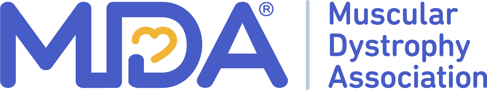

MOVR 2.0 PilotBe among the first to explore new tools designed by families, for families.
The Muscular Dystrophy Association (MDA) is reimagining MOVR—our national platform that helps families manage medical information for neuromuscular diseases—and we need your input. If you're living with DMD, SMA, or LGMD, you know what it takes to keep track of complex care and coordinate with multiple providers.
Using powerful technology platforms and your lived experience, we're reimagining what a research platform can be—making it easier to share data, visualize your care journey, and connect with the research that matters most to our community.
Pilot Enrollment Is ClosedWho can participate: Individuals or parents of minors with DMD, SMA, or LGMD
Time commitment: 6-month pilot, opt out anytime
What you'll gain: See your medical data visualized, connect with MDA's MOVR team, and accelerate discovery
Your choice: Test one pilot platform or explore all to compare experiences
Submit your information here on the MOVR 2.0 Pilot Sign Up page.
You'll be assigned to one or more pilot platforms to explore and receive an email with your platform assignment and enrollment link.
On the pilot platform(s) you're assigned, create a personal account, enroll in the study, and consent to share your medical data for research purposes.
The pilot platforms are designed to help you view, organize, and understand your medical records—all in one place with visualizations, insights, and tools that reflect your care journey.
Want to dive deeper? You can opt to test more than one pilot platform.
This lets you compare features and experiences across different tools, giving us even richer feedback.
As you explore, we'll ask for your input:
Your feedback will directly shape the future of MOVR 2.0.
Throughout the pilot, we'll keep you updated on our progress and what we're learning.
Once we select a final partner for MOVR 2.0, you'll have the choice to:
Your participation helps build a tool that accelerates research, improves care coordination, and empowers families living with DMD, SMA, and LGMD.
Duration: Up to 6 months
Flexibility: You can withdraw at any time
Impact: Your voice helps shape the future of rare disease research
Thank you to everyone who has participated in the MOVR 2.0 pilot.
Enrollment for the pilot is now closed. If you took part, you should have received a thank-you email from us.
Recruitment for the full MOVR 2.0 launch begins in Q1 2027.
Questions? Email mdamovr@mdausa.org
MOVR is MDA's secure platform that helps people with neuromuscular diseases organize their medical information. It makes tracking your health easier while helping researchers understand these conditions and develop new treatments.
We're improving MOVR to better serve families. This pilot helps us learn what tools work best and what features matter most. Your feedback will directly shape the new MOVR experience. We're testing multiple different pilot platforms to help us select the right partner to build MOVR 2.0.
Families living with Duchenne muscular dystrophy (DMD), spinal muscular atrophy (SMA), or limb-girdle muscular dystrophy (LGMD). Participants can be patients themselves or parents/caregivers.
Andre will send you an initial email with your platform assignment and enrollment link.
Jessica will follow up to ensure you complete the MDA research study consent, ask for your feedback as you explore the platform, and respond to any questions you have along the way.
You'll receive a link to one of the pilot platforms. You'll create an account, explore how it works, enter some medical information (as much as you're comfortable with), and complete a brief feedback survey. Work at your own pace. Most participants spend about 30-45 minutes on initial setup.
After you sign up, we'll send you a link to one of the pilot platforms. We're balancing participation across all pilot platforms so we can fairly evaluate each one. Want to try more than one? During sign-up you can indicate interest in exploring multiple platforms and we'll send you all links.
Yes! If you've already submitted the form and would like to participate in all pilot platforms to compare experiences, simply email mdamovr@mdausa.org and we'll reach out to you with instructions and enrollment links for the additional platforms.
Your data is stored securely on HIPAA-compliant pilot platforms. We follow strict privacy guidelines, and no personally identifying information is shared without your explicit consent. You're always in control—you decide what to share and can remove your data anytime.
Great question! After you sign up, you'll complete two steps with Jessica's guidance:
Both steps are important. Completing the research study consent allows MDA to access aggregated, de-identified insights from your platform experience. This helps us evaluate which platform features work best and make informed decisions about MOVR 2.0's future.
If you create a platform account but don't complete the research consent, you can still use the platform independently—but MDA won't be able to include your experience in our evaluation. Don't worry if you miss this step initially; Jessica will send friendly follow-up reminders to ensure you're fully enrolled and your participation counts toward shaping MOVR's future!
No. There is no cost to you or your family.
Initial setup takes about 30-45 minutes. After using the platform, we'll send a brief feedback survey (about 10 minutes). Some participants may be invited to optional focus groups.
Email mdamovr@mdausa.org anytime. We'll provide helpful guides and support throughout.